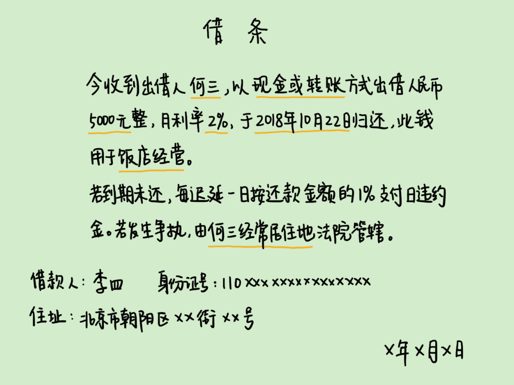

- 00 开篇词 这年头，你真应该懂点法律常识.md
- 01 “老周，我想知道” 常见法律认知盲区（一）.md
- 02 “老周，我想知道” 律师就在你身边（二）.md
- 03 “老周，我想知道” 律师就在你身边（三）.md
- 04 “老周，我想知道” 律师就在你身边（四）.md
- 05 创业未捷老板跑，社保工资哪里讨？.md
- 06 保密还是“卖身”，霸王条款怎么看？.md
- 07 编造流言蹭热度？看守所里降温度！.md
- 08 合同在手欠款难收，报警有用吗？.md
- 09 致创业：谁动了我的股权？.md
- 10 又见猝死！工“殇”究竟是不是工伤？.md
- 11 期权的“前世今生”.md
- 12 裁员面前，你能做的还有什么？.md
- 13 抄袭、盗图为什么做不得？.md
- 14 加班、工资、休假，你知道多少？.md
- 15 受贿原来这么“容易”.md
- 16 今天你用“VPN”了吗？.md
- 17 漏洞在眼前，可以悄悄破解吗？.md
- 18 “爬虫”真的合法吗？.md
- 19 非法集资到底是个啥？.md
- 20 黄色网站？不仅仅是“黄色”罪名.md
- 21 谁修改了我的积分资产？.md
- 22 外挂真能大吉大利吗？.md
- 23 如何看待“从删库到跑路”？.md
- 24 “伪基站”是你的避风港吗？.md
- 25 “网络诈骗”真的离你很远吗？.md
- 26 智斗中介：“北上广”租房图鉴.md
- 27 买买买！买房的“避坑”指南.md
- 28 闪婚又闪离，彩礼怎么理？.md
- 29 离婚还想和平？你要这么做.md
- 30 遗产继承的爱恨情仇.md
- 31 骗术升级？假结婚、假离婚的那些事儿.md
- 32 孩子学校受伤，谁之过？.md
- 33 如何让欠债还钱真正“天经地义”？.md
- 34 从透支到盗刷：人人须知的银行卡纠纷.md
- 35 远离“套路贷”的套路大全.md
- 36 危险！酒驾为什么被罚那么重？.md
- 37 老人倒地，“扶”“不服”？.md
- 38 “能动手就别吵吵”，代价你真的知道吗？.md
- 39 发生交通事故，如何处理？.md
- 40 交通事故综合法宝.md
- 41 婚姻家庭综合法宝.md
- 42 买卖房屋综合法宝.md
- 一键直达 法律专栏“食用”指南.md
- 加餐 “新冠肺炎”影响下，17个常见法律问题解答.md
- 结束语 法律，不会终止的篇章.md
33 如何让欠债还钱真正“天经地义”？
关于朋友间“借钱”的话题，有很多种说法。有的说既然是朋友张口了，该借；有的说朋友之间千万别借钱，谈钱就伤感情。还有一句经典语录，结束友情的方式有很多种，最彻底的方式是借钱不还。
我们每个人都可能要面对朋友间借钱的问题，这种情况下应该是怎样的心态呢？借还是不借呢，不管怎样的选择，友情还能跟从前一样吗？我们今天就来聊一聊这个话题。
我先来讲一个最常见的借钱的故事。小钱有一个十多年的好朋友，虽然高考后去了不同的城市，但是两人一直有联系，关系也很好。
前不久，朋友说是要创业，跟小钱开口借10万块钱。小钱很仗义，二话不说，微信转账给了朋友，没要欠条，也没提还钱时间。
一年时间过去了，朋友再也没提过还钱的事。小钱曾经开口要过，却没有任何结果。更糟心的是，两人的聊天记录被小钱给误删了。转账记录虽然能查到他给朋友的10万块，但同时还有一条记录，显示朋友四年前转过他10万块钱。
小钱心里很苦，四年前那笔钱，其实是因为朋友先跟自己借了10万元现金，然后微信转账还给自己的，跟现在的10万元欠款没有任何关系。可是目前这情况，却像是自己在敲诈人似的。
现在朋友不接电话，也不回微信，小钱见不到钱，也联系不到人，非常苦闷和憋屈。
设身处地想一下，如果你是小钱，此刻也是非常糟心的吧，哪里还敢再借钱给别人。毕竟一朝被蛇咬，十年怕井绳。
可是，除了朋友的背信弃义，小钱自己就没有任何过错了吗？我看也未必。朋友间到了这么尴尬的地步，说白了，就是爱面子，没有契约精神。
朋友间的情谊是借钱的基础，但是，知人知面不知心也是真。或许对方真的情况艰难，还不起了只好躲着；再或是你们双方闹了矛盾，对方恶意报复不给了。记性不好，往往只是借口。
因为借钱问题，属于比较复杂的民法问题，也没有对应的罪名可以定罪，我们更多靠法律经验来解决。比如小钱这事儿，他遇到的问题相对来说比较极端，有给朋友的打款记录，也有朋友给他打款的记录。可以说，遇上了死不认账的主儿，也没有对自己有利的证据。
那怎么办呢？钱要不回来，那就去起诉，让法院帮忙要钱，法院对付“老赖”还是很有一套的。当然，该有的证据也都是要收集到的。
没有借条，证据怎么找？
我们日常生活的借钱，经常碍于情面，没有签过欠条，但到了法庭上就比较无力了。单纯的流水单或其他转账记录，不能独立证明借贷关系，需要我们提供其他证据。
第一，可以收集你借给他钱的证据，比如聊天记录、邮件记录、电话录音、证人证言等，然后结合各种转账记录，增强这个事实的可信度。
第二，可以收集你催他还钱的证据，证据类型跟刚刚的的基本一样。因为在撕破脸前，一般人不会直接否认借钱的事实，最多辩解几句没钱还、或者过些天再给。这些证据虽然不如借钱的证据那么直接有力，但是结合转账记录，也可以增加说服力。
这里提到的录音证据，我再简单说一下。录音材料只要不侵犯到对方的利益，是可以作为证据的。如果没有提前准备好，你也可以用手机的录音功能，即时取证制作。
不过，录音本身有一定的要求，要清晰、真实、完整，必须清楚反映你们的借钱关系和借钱内容，也要反映欠债人的真实意志。
所以录音材料的取证中，沟通技巧就比较重要了。这一点，建议你还是找专门的律师来协助进行。
第三，可以收集对方的财产信息。为了防止出现胜诉却拿不到钱的情况，你还可以起诉前调查对方的财产情况，如银行账户、房车、股票等情况。当然，这个事情本身难度较大，即使是专门的律师，也很难全部查清楚，所以只能作为辅助手段。
没有借条，怎么追债？
收集到了证据，接下来要怎么追债呢？
追债的第一选择，一定是协商。但如果协商不成，可以用法律来帮忙了。比如，可以委托律师向对方发律师函。律师函可以起到警告作用，很多人见到律师函就会清醒不少，及时还款。不过，律师函不能强制要回，如果对方仍然拒绝，就应该起诉了。
起诉的流程，前面我们讲过，我主要强调几个细节。
起诉之前，你可以申请诉前财产保全，查封对方的财产，防止对方悄悄转移。
如果胜诉后拿不到钱，可以向法院申请强制执行。
健康的借钱方式
讲了这么多追债的内容，其实我最希望的，还是我们都有足够的法律意识，健康低风险地借钱还钱。我觉得亲友借钱，最好能做到这么几点：
借钱尽量立借条。先小人后君子，其实任何事情，在一开始就明确好界限，说清楚利弊，并不会伤感情，尤其是跟钱相关的事情。借别人的钱，你可以自己主动打欠条；借给别人，也不要不好意思提。
如果实在张不开嘴，一定保留证据。短信、微信等各种记录，银行、支付宝的各种转帐记录，都保留好。转账时，最好也在转账的备注页面写清楚是借给朋友的钱。
借钱之前，尽可能了解对方的用途。赌博吸毒一类的救急借钱，一律别理睬，那基本上是无底洞了；所谓高利息的诱饵，也要警惕，高利贷、非法集资随时可能坑你；如果明知道对方要违法犯罪，更不能沾上关系。这样的借款不受法律保护，损失得你自己扛。
另外，我也给出了法律有效的借条的样式，分别是文字和图片格式，你可以自己保存下来，留作备用。
借条的正确打开
借条
今收到出借人何三，以转账或现金方式出借人民币5000元整，月利率为2%，于2018年12月22日归还，此钱用于饭店经营。
若到期未还，每迟延一日，按应还款金额的1%支付日违约金。若发生争执，由何三经常居住地法院管辖。
借款人：李四，身份证号： ，住址：
年 月 日

- 这里要注意，约定的月利率不能超过2%。另外，管辖法院约定为何三的经常居住地，是为了方便在李四不还钱时，何三可以就近起诉。否则，如果李四在海南，何三在北京，何三还得跑到海南才能起诉，增加了起诉成本。其实，我也向朋友借过钱，基本上小额打借条，大额打借条同时约定利息。朋友可能会不好意思，表示不必要，但我会坚持这么做。所以在朋友眼中，我是一个负责任的“讲究人”，不管我跟谁借钱，别人都很爽快。
我也借钱给过朋友，我的原则是“5万分界线”。超过5万的，我会要求写借条，因为数额比较大，朋友也没有反对的，最后也都能如期还款。即使有暂时的困难，大家坦诚沟通，并不会闹什么纠纷。
不超过5万的，我不反对给我打借条，但如果朋友不主动提，我也不会额外要求。因为我已经有了思想准备，即使最后还不了我这笔钱，我也能承受得了这个后果。
我们总说，不能用法律“一刀切”解决所有问题，但法律确实是一条底线，而对于我们每个人来说，也应该设立自己的标准和底线。借钱一事，很重要的是正视你们之间的关系，明确界限和责任。
真正的朋友都是互相着想的，不会让你为难，打借条一事自然可以理解。如果不是真正的朋友，为什么不好意思要回自己的钱呢？过了心理这一关，很多事情在法律层面其实就很简单了。
不知道你有没有发生过类似的情况，遇到过借钱不还的朋友呢？或者，对于借钱、借条一事你又是怎么看的呢？欢迎留言和我分享，也欢迎你把这篇文章分享给你的亲朋好友以及朋友圈。对关系好的人，这是善意的劝告；对欠你钱的人，这也可以当作提醒了。
© 2019 - 2023 Liangliang Lee. Powered by gin and hexo-theme-book.